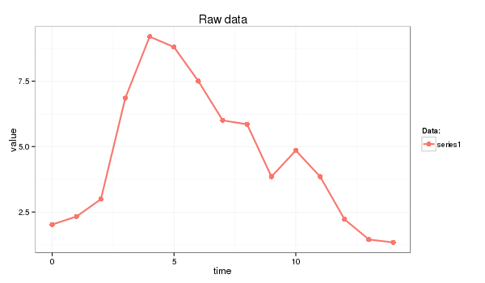
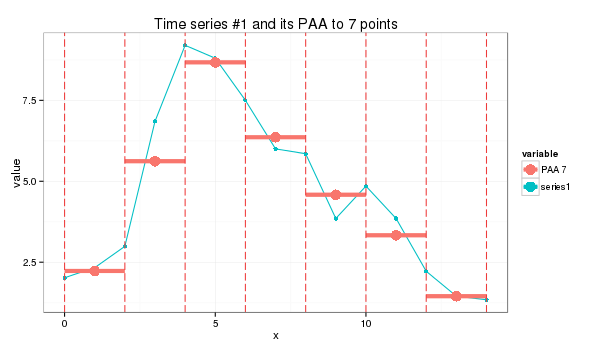
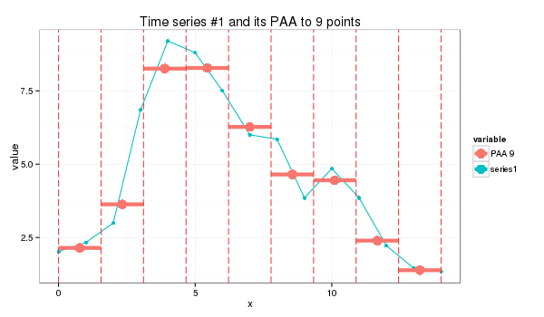

PAA approximates a time-series X of length n into vector \( \bar{X}=(\bar{x}_{1},…,\bar{x}_{M}) \) of any arbitrary length \( M \leq n \) where each of \( \bar{x_{i}} \) is calculated as follows:
Which simply means that in order to reduce the dimensionality from n to M, we first divide the original time-series into M equally sized frames and secondly compute the mean values for each frame. The sequence assembled from the mean values is the PAA approximation (i.e., transform) of the original time-series. As it was shown by Keogh et al, the complexity of the PAA transform can be reduced from O(NM) to O(Mm) where m is the number of frames. By using the following distance measure
Yi & Faloutsos, and Keogh et al, have shown that PAA satisfies to the lower bounding condition and guarantees no false dismissals, i.e.:
In this primer I use the next time series:
series1 <- c(2.02, 2.33, 2.99, 6.85, 9.20, 8.80, 7.50, 6.00, 5.85, 3.85, 4.85, 3.85, 2.22, 1.45, 1.34)

and the following R code:
paa <- function(ts, paa_size){
len = length(ts)
if (len == paa_size) {
ts
}
else {
if (len %% paa_size == 0) {
colMeans(matrix(ts, nrow=len %/% paa_size, byrow=F))
}
else {
res = rep.int(0, paa_size)
for (i in c(0:(len * paa_size - 1))) {
idx = i %/% len + 1# the spot
pos = i %/% paa_size + 1 # the col spot
res[idx] = res[idx] + ts[pos]
}
for (i in c(1:paa_size)) {
res[i] = res[i] / len
}
res
}
}
}
whose application produces a seven-point piecewise aggregate approximation:
s1_paa = paa(series1,7) (2.23, 5.62, 8.67, 6.36, 4.58, 3.33, 1.45)

or a 9-point approximation which is a bit trickier:
s1_paa = paa(series1,9) (2.14, 3.63, 8.26, 8.28, 6.27, 4.65, 4.45, 2.39, 1.38)
